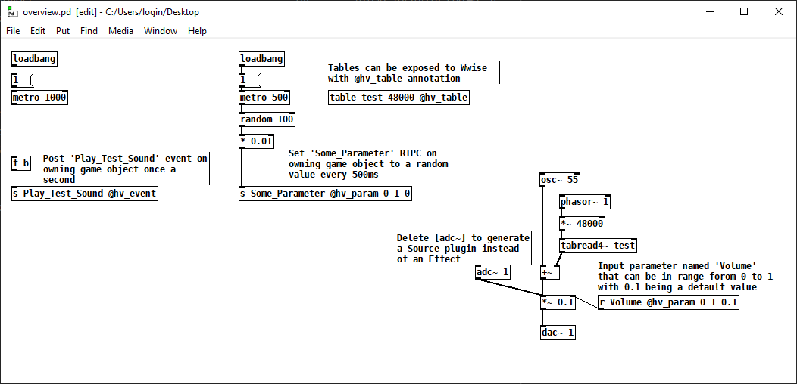
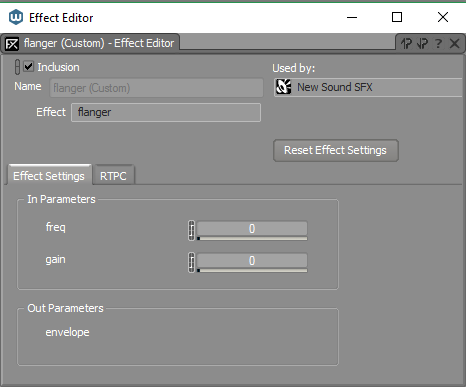
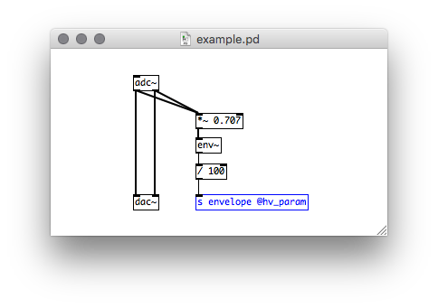

Wwise
hvcc will generate a Wwise plugin project that can be built with Audiokinetic's build system, see Using the Development Tools. This system can generate project files for all supported platforms, as well as package the plugin for distribution with Wwise Launcher. Please refer to the official documentation for more details.
The minimum required SDK version is 2022.1.x or higher.
Feature Overview
Heavy currently supports the following Wwise features:
- Source or Effect plugins
- Using uncompressed audio to build samplers
- Input parameters are RTPC-controllable
- Output parameters can set RTPC in Wwise
- Output events can post arbitrary events in Wwise from the plugin

Source Generator or FX Unit
The type of plugin that heavy generates is dynamically determined depending on the I/O channel configuration. If an [adc~] object exists in the patch the generated plugin with be an FX unit. Otherwise it'll be a source generator plugin.
RTPCs
The Wwise target supports both input and output parameters.

Input Parameters
Exposing an input parameter will automatically generate a Slider UI in the plugin interface, that can then be connected to RTPCs from your game.
Output Parameters
Sending a single float value to an output parameters will in turn cause the corresponding RTPC of the same name to be set. It will be set on the same game object. Note: it's important that the naming of the output parameter and the global RTPC set up in Wwise are exactly the same.
The example patch below describes a simple envelope follower that can be used to modulate other parameters of the same voice:

Posting Wwise Events from the Plugin
Sending any message to an output event will post a Wwise event with the same name on the same game object. This can be used, for example, to trigger events in Wwise in response to RTPC changes, or to implement a generative event triggering system.
Note, in some situations, Heavy may only be able to send one output message per tick, e.g. posting an event and setting an RTPC at the same time won't be possible. To work around this, you can spread these actions apart with a [delay 1] node, for example.
Multi-channel plugins
The plugin supports the following channel configurations:
- AK_SPEAKER_SETUP_MONO
- AK_SPEAKER_SETUP_STEREO
- AK_SPEAKER_SETUP_5POINT1
- AK_SPEAKER_SETUP_7POINT1
- AK_SPEAKER_SETUP_DOLBY_7_1_4
An appropriate configuration will be selected at compile time based on the number of inputs and outputs in a patch (e.g. [adc~ 1 2 3 4 5 6] will create a 5.1 plugin). As this information is compiled in, the plugins can only be used on busses with corresponding channel configurations and will print an error if used elsewhere. To work around this, you can enforce bus channel configuration in the 'General Settings' tab.
Example: Building Your Plugin on Windows
Installing Visual Studio and Required Components
To build Authoring and Engine plugins on Windows you’ll need:
- Visual Studio 2022 with the following components:
- Desktop development with C++ workload
- MSVC v143 - VS 2022 C++ x64/x86 build tools
- C++ ATL for latest v143 build tools (x86 & x64)
- C++ MFC for latest v143 build tools (x86 & x64)
- Windows Universal CRT SDK
- Windows SDK
- Any version that's not "out of support" should work
- Different version can be specified in a generated PremakePlugin.lua file
- Wwise 2022 or later
- Version 2021 should work, too, but it wasn't tested
- SDKs with required deployment platforms must be installed through Wwise Launcher
Converting a Pure Data Patch to C++ Code
Let's say we've got a Pd patch HvccTestFX71.pd which was saved on a Desktop. These commands will generate code for this patch and place it in Hvcc_Out_Dir directory:
Building C++ Code
Heavy generates a project compatible with Audiokinetic's Development Tools, which can build the plugins for all supported platforms, see the documentation for more details. Important: Please close any running Wwise Authoring instance as it'll prevent the plugin from being built.
Change into the generated directory:
Generate Visual Studio project files; note, WWISEROOT environment variable can be set from Wwise Launcher by clicking on Set Environment Variables button in front of an installed Wwise entry:
python "%WWISEROOT%\Scripts\Build\Plugins\wp.py" premake Authoring
python "%WWISEROOT%\Scripts\Build\Plugins\wp.py" premake Windows_vc170
Build Authoring and Engine plugins in Release configurations with for Visual Studio 2022 (vc170):
python "%WWISEROOT%\Scripts\Build\Plugins\wp.py" build -c Release -x x64 -t vc170 Authoring
python "%WWISEROOT%\Scripts\Build\Plugins\wp.py" build -c Release -x x64 -t vc170 Windows_vc170
At this point, the plugins should be placed in correct SDK directories and be ready for use in the Authoring app.
Optional: Packaging the Binaries for Wwise Launcher
We can go a step further and package the plugins into a bundle that can be installed conveniently from Wwise Launcher.
python "%WWISEROOT%\Scripts\Build\Plugins\wp.py" package --version 2022.1.0.1 Authoring
python "%WWISEROOT%\Scripts\Build\Plugins\wp.py" package --version 2022.1.0.1 Windows_vc170
python "%WWISEROOT%\Scripts\Build\Plugins\wp.py" generate-bundle --version 2022.1.0.1
mkdir Bundle
copy /y bundle.json Bundle
copy /y *.tar.xz Bundle
The Bundle directory now contains a packaged plugin you can install through Wwise Launcher, see Wwise Version -> Manage Plug-ins -> Install from directory / Install from archive.
Example: Building Your Plugin on Linux
Building Linux plugin binaries is relatively easy. It requires python3 to be installed. Also make sure the Linux SDK is in a path without spaces or special characters.
Then make sure the premake5 binary in the SDK has the executable flag set:
Now run the premake and build commands from your hvcc output directory:
$ cd <out_dir>/wwise/
<out_dir>/wwise$ python3 <SDK_PATH>/Scripts/Build/Plugins/wp.py premake Linux
<out_dir>/wwise$ python3 <SDK_PATH>/Scripts/Build/Plugins/wp.py build -c Release -x x64 Linux
This will put a plugin build into your <SDK_PATH>/SDK/Linux_x64/Release/bin/ directory.
To create a package and bundle subsequently do the following: